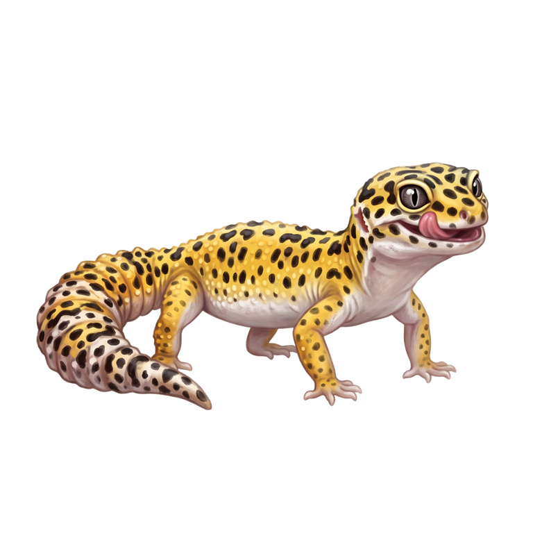
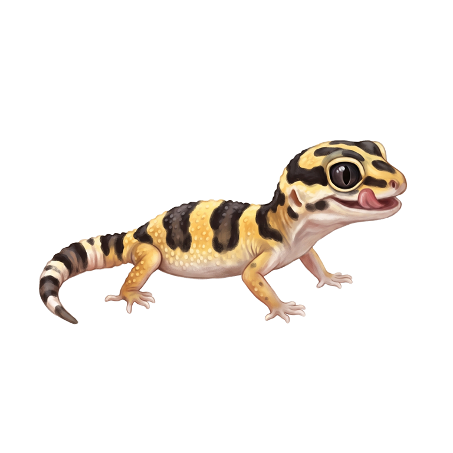
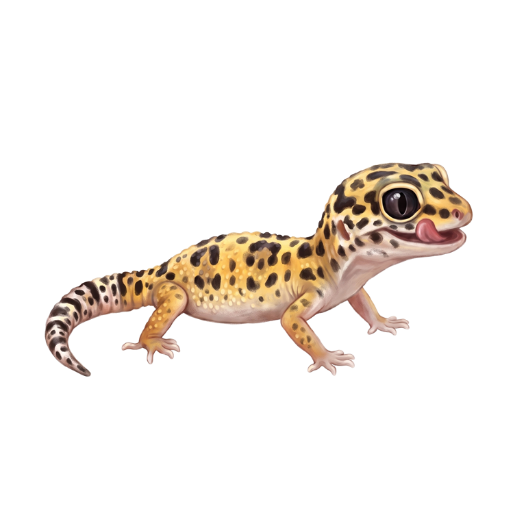
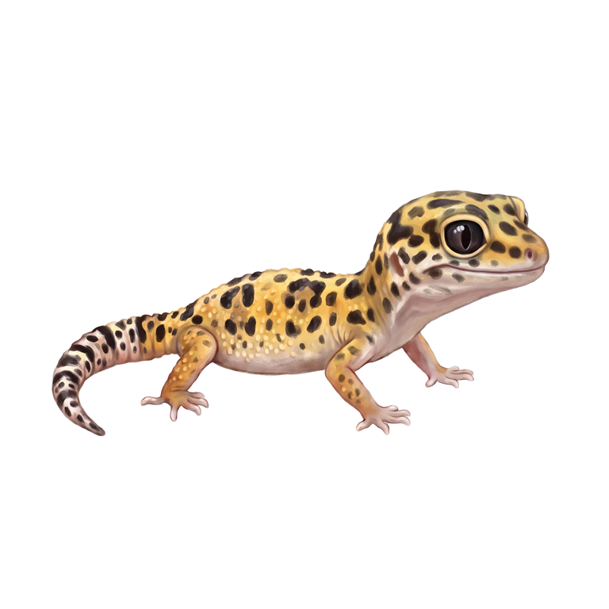
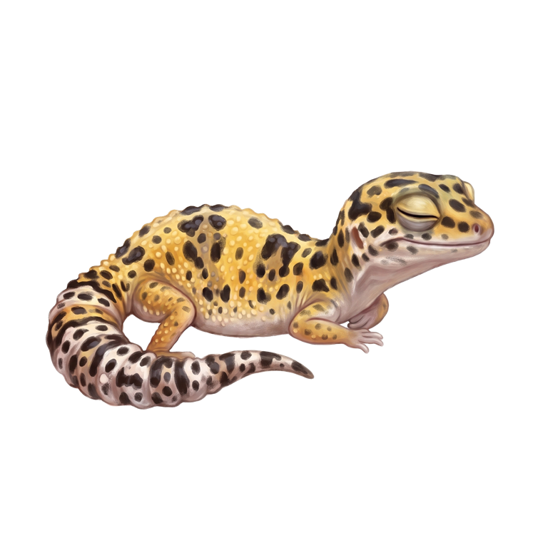

안녕! 나는 레오파드 게코야 🦎
나를 잘 돌봐주면 알에서 태어나서
멋진 어른 게코로 자랄 수 있어!
어떻게 돌봐주는지 같이 알아보자.
🌱 이렇게 자라요

알10분 기다리면톡! 태어나요

아기 게코줄무늬가있어요

어린 게코2일 동안잘 돌봐주면
잘 돌봐주면
화면의 🌱 노란 막대가 꽉 차면 다음 단계로 자라요.
배고프거나, 목마르거나, 너무 춥거나 더우면 막대가 멈춰요.
그러니까 매일 잘 돌봐줘야 해요!
🌙 저절로 자라는 시간도 있어요. 돌봐 줄 수 없는 시간에는 배고프거나 졸려도 계속 자라요.
· 매일 밤 10시 ~ 아침 7시 (잠자는 시간)
· 평일 아침 8시 30분 ~ 오후 1시 (학교 가는 시간, 주말·공휴일은 빼요)
이때는 막대 옆에 "저절로 쑥쑥 자라는 시간 🌙"이라고 나와요.
⏩ 빨리 키우는 방법: ✏️ 수학 미션 통과하면 1시간, ✅ Today CheckList를 다 하면 6시간 빨라져요!
🥚 어른 게코를 3일 더 잘 돌봐주면 알을 낳아요.
다 키운 게코는 📸 가족 앨범에 이름과 사진으로 남고, 새 아기가 알에서 다시 태어나요.
알에서 어떤 색의 게코(모프)가 나올지는 랜덤이에요! 만난 게코는 앨범의 📖 도감에 모여요. 32가지를 모두 모아 보세요.
🎈 도감에서 예전에 키운 게코의 놀러 와! 버튼을 누르면 친구가 사육장에 놀러 와요.
밥은 안 줘도 되고 같이 신나게 놀기만 해요. 지금 게코의 행복 +20! 친구마다 하루에 한 번 놀러 올 수 있어요.
✅ 매일 해줄 일
- 🍎밥 주기
귀뚜라미나 밀웜을 줘요. 밀웜은 맛있는 간식이에요. - 💧물 갈아주기
하루에 한 번! 물그릇 물이 탁해지면 새 물로 바꿔줘요. - 💩응가 치우기
밥을 먹고 조금 지나면 응가를 해요. 응가를 톡 누르면 집게로 치울 수 있어요. - ⚽같이 놀기
벌레 잡기, 짝 맞추기, 숨바꼭질을 하면 엄청 좋아하고 코인도 받아요. - 🌙밤에 재우기
재우면 은신처 동굴 안으로 쏙 들어가 자요. 잘 때는 히팅램프를 꺼 주세요. - ✅Today CheckList
나의 하루 할 일을 체크해요. 다 하면 게코가 6시간 더 빨리 자라요!
🔘 버튼 알아보기
📝 돌봄 버튼을 누르면 먼저 문제가 나와요. 밥주기는 곱셈, 놀아주기·청소·물 갈기·분무는 영어 받아쓰기예요. (아래 설명을 봐요)
💡 게코를 손가락으로 톡 건드려 보세요. 여러 가지 말로 대답해요.
💡 물그릇이나 램프를 직접 눌러도 돼요.
💡 화면 위의 🔊 버튼으로 소리를 끄고 켤 수 있어요.
✏️ 수학 미션
학년을 고르고 문제 5개를 풀어요. 4개 이상 맞히면
🦴 칼슘 영양제를 받아서 게코가 1시간 더 빨리 자라고 기분도 좋아져요!
⭐ 문제는 종류마다 레벨이 있어요. 4문제 연속으로 맞히면 레벨이 올라가고, 어려워하는 종류는 더 자주 나와요.
📒 틀린 문제는 오답 노트에 적혀서 다음 미션에 다시 나와요. 맞히고, 다음 날 비슷한 문제도 맞히면 졸업!
🪱 레벨 업·오답 졸업·만점이면 누에 간식을 받아요. 밥주기에서 게코에게 줄 수 있어요.
🦴 영양제는 횟수 제한 없이 통과할 때마다 받을 수 있어요.
🔍 진짜 레오파드 게코도 먹이에 칼슘 가루를 묻혀 줘야 뼈가 튼튼하게 자라요.
🔤 돌봄 문제: 곱셈과 영어 받아쓰기
🍎 밥주기 전에는 곱셈 한 문제를 풀어요. 맞히면 바로 밥을 줄 수 있어요.
틀리면 정답을 보여 주고 비슷한 문제가 하나 더 나와요.
⚽🧹💧💦 놀아주기·청소·물 갈기·분무 전에는 영어 받아쓰기를 해요.
게코가 영어 단어 → 한국어 뜻 → 영어 단어 순서로 읽어 줘요. 잘 듣고 화면 키보드로 철자를 써요.
🔊 다시 듣기를 누르면 몇 번이든 다시 들을 수 있어요.
❤️ 기회는 5번이에요. 틀리면 틀린 글자가 빨갛게 보이고, 단어를 한 번 더 천천히 읽어 줘요.
예) apple 을 a_ple 로 쓰면 빠진 자리가 빨간 _ 로 나와요.
5번 다 틀리면 정답을 알려 주고 새 단어가 나와요. 틀렸던 단어는 나중에 또 나와요.
📚 단어는 동물·음식·물건 같은 단어와 what, when, because, they 같은 의문사·접속사·대명사예요.
✅ Today CheckList
초록색 ✅ Today CheckList 버튼을 누르면 오늘 할 일이 나와요. 한 일을 톡 눌러 체크해요.
13개를 모두 체크하면 게코가 6시간 더 빨리 자라고 행복해져요! (하루에 한 번)
날짜가 바뀌면 체크는 처음부터 다시 해요.
🔥 며칠 연속으로 다 하면 보너스가 있어요!
| 연속 | 받는 성장 |
|---|---|
| 5일째 (15일, 25일…) | 6시간 + 보너스 6시간 |
| 10일째 (20일, 30일…) | 6시간 + 보너스 12시간 |
하루라도 빠지면 연속 기록이 1일부터 다시 시작해요.
💦 습도와 허물 벗기
💦 분무하기를 누르면 사육장이 촉촉해져요. 습도가 높으면 유리에 김이 서리고 물방울이 맺혀요.
손가락으로 유리를 문지르면 뽀득뽀득 닦을 수 있어요. 시간이 지나면 다시 서려요.
게코가 자랄 때가 되면 몸이 뿌옇고 하얗게 변해요. 허물 벗을 준비를 하는 거예요! (다 큰 어른은 허물 대신 알 낳을 준비를 해요)
이때 분무해서 습도를 60% 넘게 해 주면, 벽에 몸을 비벼 허물을 벗고 벗은 허물을 냠냠 먹어요.
🔍 진짜 레오파드 게코도 벗은 허물을 먹어서 영양을 다시 챙겨요.
⚠️ 너무 축축하면(85% 넘게) 게코가 싫어해요. 평소에는 30~60%면 충분해요.
🎨 사육장 꾸미기
위의 🎨 꾸미기를 누르면 장식함이 열려요. 장식을 끌어서 사육장 아무 데나 놓아요.
놓은 장식을 톡 누르면 ↔️ 뒤집기, ➖➕ 크기, 🗑️ 빼기를 할 수 있어요. 끌어서 옮길 수도 있어요.
🔒 잠긴 장식은 게코를 잘 돌보면 열려요. 밥 주기, 영어 단어 맞히기, 수학 미션 통과, 응가 치우기, 물 갈아주기, 분무하기, 허물 벗기,
짝 맞추기·숨바꼭질 성공, 게코가 자라는 것까지! 장식함에서 무엇을 하면 열리는지, 얼마나 남았는지 볼 수 있어요.
새 장식이 생기면 NEW 표시가 떠요. 장식은 한 번에 20개까지 놓을 수 있어요.
🛒 상점과 코인
⚽ 놀아주기를 하면 🪙 코인을 받아요.
🦗 벌레 1마리에 1개 · 🃏 짝 1쌍에 1개 (10번 안에 끝내면 +6, 14번 안이면 +3) · 🙈 숨바꼭질 1번 찾을 때 3개 · 완벽하게 하면 보너스 3개!
모은 코인으로 위의 🛒 상점에서 사육장을 업그레이드해요.
🪨 은신처: 이끼 동굴 → 수정 동굴 (덜 심심하고, 잘 때 더 푹 자요)
💧 물그릇: 큰 파란 물그릇 → 황금 샘물 그릇 (물이 천천히 줄어요)
🏖️ 바닥재: 부드러운 흙 → 숲속 이끼 흙 (사육장이 덜 더러워져요)
🍽️ 먹이 그릇: 벌레 탈출 방지 그릇 → 자동 먹이 상자 (배가 천천히 고파요)
🛏️ 잠자리: 보들보들 해먹 → 따뜻한 온열 매트 (덜 졸려요)
🌫️ 가습기: 작은 분무기 → 안개 폭포 (촉촉함이 오래가요)
🌷 튤립, 🎈 풍선, 🧸 곰 인형, ⛺ 텐트, 🌋 화산, 🛸 UFO, 🚀 로켓, 🎡 관람차, 🦄 유니콘 인형처럼 장식도 많이 살 수 있어요. 산 장식은 🎨 꾸미기에서 놓아요.
🖐️ 게코와 놀기
머리를 꾹 누르고 있으면 쓰다듬어 줄 수 있어요. 눈을 지그시 감고 좋아해요 😌
유리를 톡 두드리면 게코가 그쪽을 쳐다봐요. 하지만 자꾸 두드리면 깜짝 놀라요!
가만히 보고 있으면 숨 쉬는 모습, 혀를 날름거리는 모습, 혀로 눈을 닦는 모습도 볼 수 있어요.
💬 게코의 말풍선은 얼굴 위에 떠요. 시간, 날씨, 체크리스트, 기분에 따라 여러 가지 말을 하고, 가끔 게코 상식도 알려 줘요.
😴 잘 때는 은신처 동굴 안에 들어가서, 입구로 자는 얼굴이 빼꼼 보여요. 쉿!
🌅 사육장 불빛은 진짜 시간을 따라가요. 낮에는 햇살, 밤에는 붉은 밤 램프 빛이에요.
🌡️ 온도계 보는 법
게코는 몸이 차가운 동물이라서 따뜻한 곳이 필요해요.
사육장 왼쪽 위 온도계 색깔을 봐요.
→ 🔥 램프를 켜 주세요. 추우면 밥도 못 먹어요.
→ 지금처럼만 해 주세요!
→ 램프를 끄거나 🌬️ 선풍기를 눌러 주세요. 더우면 동굴에 숨어요.
램프를 켜면 온도가 천천히 올라가고, 끄면 천천히 내려가요.
계속 켜 두면 너무 뜨거워지니까 가끔 온도계를 확인해요.
💭 게코 기분 알아보기
잘 돌봐주고 있어요!

🙂 괜찮아요조금만 더 신경 써줘요
말풍선을 읽어 봐요. 뭐가 필요한지 알려줘요

😴 자요쉿! 푹 자게 해 줘요
🔍 진짜 레오파드 게코 이야기
💚 걱정하지 마요
며칠 못 들어와도 게코는 아프거나 떠나지 않아요.
조금 배고프고 심심해할 뿐이에요.
다시 와서 밥 주고 놀아주면 금방 기분이 좋아져요!